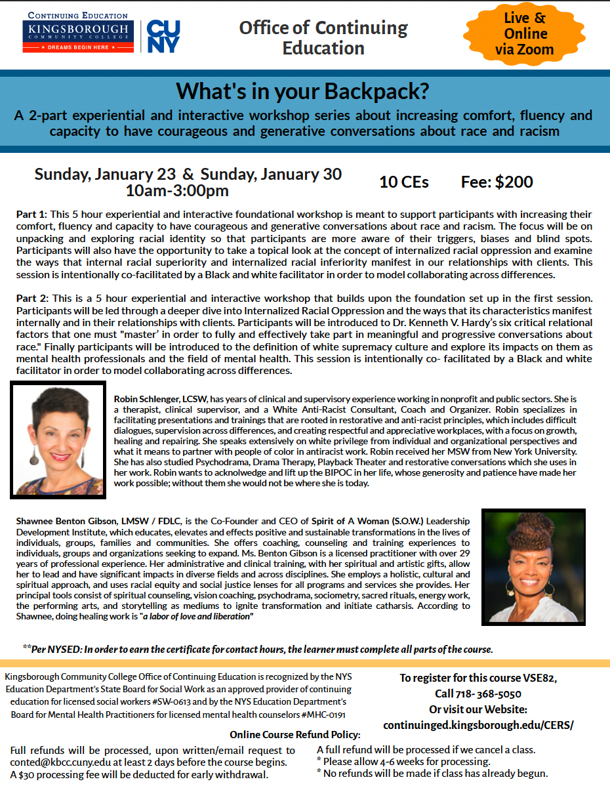

2021-12-22
Marus Gift Of Vulnerability
For those of you that know me well, you know that my beloved dog Maru (best friend, furry child and love of my life) transitioned in November. Maru continues to be part of my life. He has taught me the meaning of unconditional love and has given me yet another gift in his passing. In my grief, I have found a deep place of vulnerability. This vulnerability has allowed me to feel more deeply, to be less defensive and be more present. With my heart open, I have started to let the walls fall down and allow people to see me (the good, bad, ugly and beautiful). It wasn’t intentional, but I have found that during my grief, I have been unable to hold up the walls that I usually gather around myself. When the walls fall, my heart and soul are bare. From this place, I can truly connect and be in real relationship with others. When I am vulnerable and open, I can’t hide in my head. When I can’t hide in my head, I am in sync with my heart. When I am in my heart, I can trust my intuition. When I can trust my intuition, I am connecting to the humanity in myself and others. In this place lies the self I aspire to be. It is a place of honesty, compassion and love. This is the place that grounds me so that I can REALLY show up and advocate for racial and social justice.
Thank you my beloved Maru for bringing me closer to restoring the humanity that white supremacy culture has robbed me of. It is a journey and I look forward to seeing you all on the road.
Happy Holidays,
Robin
Embedded media (requires internet): //cdn.embedly.com/widgets/media.html?src=https%3A%2F%2Fwww.youtube.com%2Fembed%2FJ-jIoA1ggSU%3Ffeature%3Doembed&display_name=YouTube&url=https%3A%2F%2Fwww.youtube.com%2Fwatch%3Fv%3DJ-jIoA1ggSU&image=https%3A%2F%2Fi.ytimg.com%2Fvi%2FJ-jIoA1ggSU%2Fhqdefault.jpg&key=61d05c9d54e8455ea7a9677c366be814&type=text%2Fhtml&schema=youtube
On November 19th, I was interviewed by Marsha Ramroop, RIBA Director of Inclusion and former BBC journalist, on the RIBA radio show. You can find my interview at 47:30; the entire video is about an hour long.
Receive 10 CE's!
TO REGISTER FOR THIS WORKSHOP, PLEASE DO THE FOLLOWING:
Contact Kingsborough Community College by phone Monday - Friday 9a-5p: (718) 368-5050 and indicate that you want to register for the "What's in your Backpack?" workshop
If you are a new registrant, you will need to become a student at the college and pay a $25 registration fee

CONTACT & CONVERSATION: “Creating authentic conversations around race through mindfulness” - Join Darryl Akin-Afam and Robin Schlenger virtually on Zoom for a two-hour taste of CONTACT & CONVERSATION 1.0 on Thursday, January 27th (7:00-9:00pm EST) OR Saturday, February 19th (11am-1:00pm EST) https://www.eventbrite.com/e/167335158965
Embedded media (requires internet): //cdn.embedly.com/widgets/media.html?src=https%3A%2F%2Fwww.youtube.com%2Fembed%2F1TpYUPL2bKg%3Ffeature%3Doembed&display_name=YouTube&url=https%3A%2F%2Fwww.youtube.com%2Fwatch%3Fv%3D1TpYUPL2bKg&image=https%3A%2F%2Fi.ytimg.com%2Fvi%2F1TpYUPL2bKg%2Fhqdefault.jpg&key=61d05c9d54e8455ea7a9677c366be814&type=text%2Fhtml&schema=youtube
I was interviewed by Amira Martin, LCSW-R, and I shared more about my private practice, training, and leadership work. Throughout the interview, I talked about my approach to my work as a white therapist using an anti-racist perspective.
Click the video to watch, like, and subscribe! Full link: https://www.youtube.com/watch?v=1TpYUPL2bKg